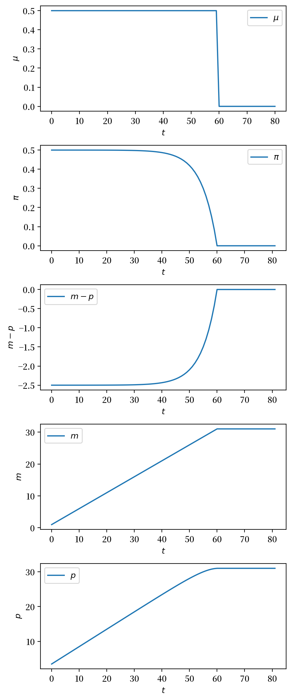
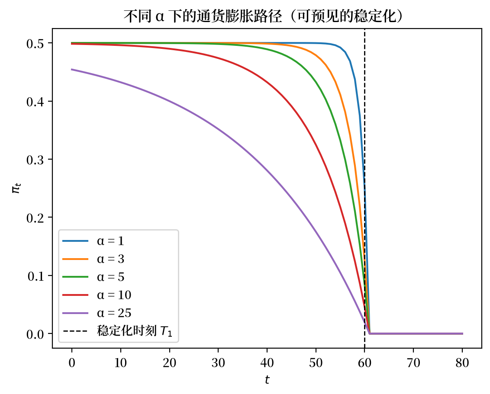
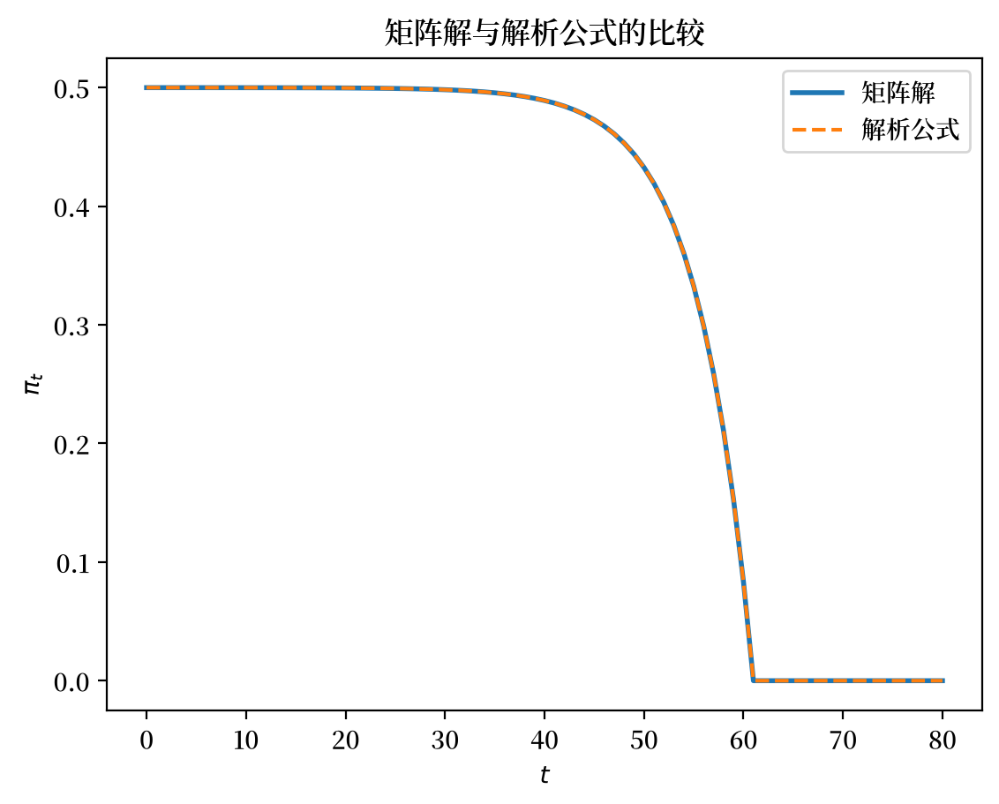

14. 货币主义价格水平理论#
14.1. 概述#
我们将先用线性代数分析”货币主义价格水平理论”，然后对这个理论进行一系列实验。
这个理论之所以被称为价格水平的”货币”或”货币主义”理论，是因为它认为价格水平的变化源于中央银行对货币供应量的控制。其基本逻辑是：
政府的财政政策决定支出是否超过税收
当支出超过税收时，政府可能会要求中央银行通过印钞来填补这个缺口
这会引发价格水平的变化，直到货币供给与货币需求达到平衡
托马斯·萨金特和尼尔·华莱士在[Sargent, 2013]第5章（重印自1981年明尼阿波利斯联储的文章《令人不快的货币主义算术》）中详细阐述了这一理论。
这个理论有时也被称为”价格水平的财政理论”，强调了财政赤字在影响货币供应变化中的核心作用。约翰·科克伦[Cochrane, 2023]对该理论进行了进一步的发展、评析和应用。
在另一个讲座价格水平历史中，我们探讨了第一次世界大战后欧洲的几次恶性通货膨胀。
价格水平财政理论的核心机制有助于我们理解这些历史事件。
该理论指出，当政府长期支出超过税收并通过印钞融资（即”财政赤字”）时，就会推高价格水平，导致持续通货膨胀。
“货币主义”或”价格水平的财政理论”的两个核心论断：
持续通货膨胀始于政府持续通过印钞来弥补财政赤字
当政府停止这种政策后，持续通货膨胀将消退
本讲座使用的模型是菲利普·凯根[Cagan, 1956]用来研究恶性通货膨胀货币动态的模型的”理性预期”（或”完全预见”）版本。虽然凯根本人没有使用理性预期版本，但托马斯·萨金特[Sargent, 1982]在研究一战后欧洲四大通货膨胀的终结时采用了这一版本。
讲座基于适应性预期的价格水平财政理论描述了该模型的一个版本，它不施加”理性预期”，而是使用凯根和他的导师米尔顿·弗里德曼所称的”适应性预期”
阅读过这两篇讲座的读者会注意到，本讲座中理性预期版本的代数运算相对简单
代数复杂程度的差异可归因于以下原因：适应性预期版本的模型包含更多内生变量和更多自由参数
我们用理性预期版本模型做的一些定量实验旨在说明财政理论如何解释那些大通货膨胀的突然终结。
在这些实验中，我们会遇到一种”速度红利”现象——这种现象有时伴随着成功的通货膨胀稳定计划出现。
为了便于使用线性矩阵代数作为主要数学工具，我们将采用该模型的有限时间版本。
14.2. 模型结构#
该模型包括
一个函数，表示政府印制货币的实际余额需求是公众预期通货膨胀率的反函数
外生的货币供应增长率序列。货币供应增长是因为政府印钞来支付商品和服务
使货币需求等于供给的均衡条件
一个”完全预见”假设，即公众预期的通货膨胀率等于实际通货膨胀率
为了正式表示该模型，令
\( m_t \) 为名义货币余额供应的对数
\(\mu_t = m_{t+1} - m_t \) 为名义余额的净增长率
\(p_t \) 为价格水平的对数
\(\pi_t = p_{t+1} - p_t \) 为 \(t\) 和 \( t+1\) 之间的净通货膨胀率
\(\pi_t^*\) 为公众预期的时刻 \(t\) 和 \(t+1\) 之间的通货膨胀率
\(T\) 为时间范围 – 即模型将确定 \(p_t\) 的最后一个时期
\(\pi_{T+1}^*\) 为 \(T\) 和 \(T+1\) 之间的终端通货膨胀率
实际余额 \(\exp\left(m_t^d - p_t\right)\) 的需求由以下版本的凯根需求函数决定
这个方程表明，实际货币余额的需求与预期通货膨胀率成反比，敏感度为 \(\alpha\)。
人们通过解决预测问题以某种方式获得了完全预见。
这让我们设置
同时使货币需求等于供给让我们对所有 \(t \geq 0\) 设置 \(m_t^d = m_t\)。
前面的方程然后意味着
为了详细说明私人主体拥有完全预见意味着什么,我们从时间 \( t \) 的方程 (14.3) 中减去 \( t+1 \) 时的相同方程得到
我们将其重写为关于 \(\pi_s\) 的前瞻性一阶线性差分方程,其中 \(\mu_s\) 作为”强制变量”:
其中 \( 0< \frac{\alpha}{1+\alpha} <1\)。
设 \(\delta =\frac{\alpha}{1+\alpha}\),让我们将前面的方程表示为
将这个 \(T+1\) 个方程的系统写成单个矩阵方程
通过将方程 (14.4) 两边乘以左侧矩阵的逆,我们可以计算
结果是
我们可以将方程
表示为矩阵方程
将方程 (14.6) 两边乘以左侧矩阵的逆将得到
方程 (14.7) 显示，时间 \(t\) 的货币供应对数等于初始货币供应对数 \(m_0\) 加上从时间 \(0\) 到 \(T\) 之间的货币增长率累积。
14.3. 延续值#
为确定延续通胀率 \(\pi_{T+1}^*\)，我们将在 \(t = T+1\) 时应用以下方程 (14.5) 的无限期版本：
并假设 \(T\) 之后 \(\mu_t\) 的延续路径如下：
将上述方程代入 \(t = T+1\) 时的方程 (14.8) 并重新排列，我们可以推导出：
其中我们要求 \(\vert \gamma^* \delta \vert < 1\)。
让我们实现并解决这个模型。
像往常一样，我们将从导入一些 Python 模块开始。
import numpy as np
from collections import namedtuple
import matplotlib.pyplot as plt
plt.rcParams['figure.dpi'] = 200
import matplotlib as mpl
FONTPATH = "fonts/SourceHanSerifSC-SemiBold.otf"
mpl.font_manager.fontManager.addfont(FONTPATH)
plt.rcParams['font.family'] = ['Source Han Serif SC', 'DejaVu Sans']
首先，我们将参数存储在一个namedtuple中：
# 创建有限视界凯根模型的理性预期版本
CaganREE = namedtuple("CaganREE",
["m0", # 初始货币供给
"μ_seq", # 增长率序列
"α", # 敏感度参数
"δ", # α/(1 + α)
"π_end" # 最后一期的预期通货膨胀率
])
def create_cagan_model(m0=1, α=5, μ_seq=None):
δ = α/(1 + α)
π_end = μ_seq[-1] # 计算最后一期的预期通货膨胀率
return CaganREE(m0, μ_seq, α, δ, π_end)
现在我们可以求解这个模型，利用上述矩阵方程来计算 \(t =1, \ldots, T+1\) 时的\(\pi_t\), \(m_t\) 和 \(p_t\)
def solve(model, T):
m0, π_end, μ_seq, α, δ = (model.m0, model.π_end,
model.μ_seq, model.α, model.δ)
# 创建上述矩阵表示
A1 = np.eye(T+1, T+1) - δ * np.eye(T+1, T+1, k=1)
A2 = np.eye(T+1, T+1) - np.eye(T+1, T+1, k=-1)
# 假设 γ* = 1
b1 = (1-δ) * μ_seq + np.concatenate([np.zeros(T), [δ * π_end]])
b2 = μ_seq + np.concatenate([[m0], np.zeros(T)])
π_seq = np.linalg.solve(A1, b1)
m_seq = np.linalg.solve(A2, b2)
π_seq = np.append(π_seq, π_end)
m_seq = np.append(m0, m_seq)
p_seq = m_seq + α * π_seq
return π_seq, m_seq, p_seq
14.3.1. 一些定量实验#
在接下来的实验中，我们将使用公式 (14.9) 作为预期通货膨胀的终端条件。
在设计这些实验时，我们对 \(\{\mu_t\}\) 做出的假设与公式 (14.9) 一致。
我们描述了几个这样的实验。
在所有这些实验中，
因此，根据上述符号和 \(\pi_{T+1}^*\) 的计算公式，我们可以得到 \(\gamma^* = 1\)。
14.3.1.1. 实验1：可预期的突然稳定#
在这个实验中，我们将探讨当 \(\alpha >0\) 时，一个可预期的通货膨胀稳定政策会如何影响其实施前的通货膨胀走势。
我们将分析这样一种情况：货币供应增长率在 \(t=0\) 到 \(t=T_1\) 期间保持在 \(\mu_0\) 的水平，然后在 \(t=T_1\) 时刻突然永久性地降至 \(\mu^*\)。
因此，令 \(T_1 \in (0, T)\)。
所以当 \(\mu_0 > \mu^*\) 时，我们假设
让我们先来实施”实验1”的一个版本，在这个实验中，政府会在时间 \(T_1\) 实施一个可预见的突然永久性下调货币创造率的政策。
我们设定以下参数来进行实验
T1 = 60
μ0 = 0.5
μ_star = 0
T = 80
μ_seq_1 = np.append(μ0*np.ones(T1), μ_star*np.ones(T-T1+1))
cm = create_cagan_model(μ_seq=μ_seq_1)
# 求解模型
π_seq_1, m_seq_1, p_seq_1 = solve(cm, T)
我们用下面的函数来进行绘图
def plot_sequences(sequences, labels):
fig, axs = plt.subplots(len(sequences), 1, figsize=(5, 12))
for ax, seq, label in zip(axs, sequences, labels):
ax.plot(range(len(seq)), seq, label=label)
ax.set_ylabel(label)
ax.set_xlabel('$t$')
ax.legend()
plt.tight_layout()
plt.show()
sequences = (μ_seq_1, π_seq_1, m_seq_1 - p_seq_1, m_seq_1, p_seq_1)
plot_sequences(sequences, (r'$\mu$', r'$\pi$', r'$m - p$', r'$m$', r'$p$'))
findfont: Failed to find font weight normal, now using 600.
findfont: Failed to find font weight normal, now using 600.
findfont: Failed to find font weight normal, now using 600.
{kind=link}

顶部面板中货币增长率 \(\mu_t\) 的图表显示在时间 \(T_1 = 60\) 时从 \(.5\) 突然降至 \(0\)。
这导致通货膨胀率 \(\pi_t\) 在货币供应增长率下降之前的时间 \(T_1\) 之前逐渐降低。
注意通货膨胀率如何平滑（即连续）地降至 \(T_1\) 时的 \(0\) —— 与货币增长率不同，它在 \(T_1\) 时并没有突然”跳跃”下降。
这是因为在 \(T_1\) 时 \(\mu\) 的下降从一开始就被预见到了。
底部面板中显示的对数货币供应在 \(T_1\) 处有一个拐点，但对数价格水平却没有——它是”平滑的”——这再一次是因为 \(\mu\) 的下降已被预见到。
为了给下一个实验做铺垫，我们想更深入地研究一下价格水平的决定因素。
14.3.2. 对数价格水平#
我们可以利用方程 (14.1) 和 (14.2) 得出对数价格水平满足：
或者，利用方程(14.5)，
在下一个实验中，我们将研究货币增长发生的一次”意外的”永久性变化，这一变化事先完全没有被预期到。
当这种”意外的”货币增长率变化在时间 \(T_1\) 发生时，为了满足公式 (14.10)，实际货币余额的对数会随着 \(\pi_t\) 的向下跳跃而向上跳跃。
但是要使 \(m_t - p_t\) 发生跳跃，究竟是哪个变量在跳跃，\(m_{T_1}\) 还是 \(p_{T_1}\)？
接下来我们将探讨这个有趣的问题。
14.3.3. 什么在跳跃？#
在 \(T_1\) 时刻，什么发生了跳跃？
是 \(p_{T_1}\) 还是 \(m_{T_1}\)？
如果我们坚持货币供应量 \(m_{T_1}\) 固定在从过去继承的水平 \(m_{T_1}^1\)，那么公式 (14.10) 意味着价格水平会在时间 \(T_1\) 向下跳跃，与 \(\pi_{T_1}\) 的向下跳跃相一致。
关于货币供应水平的另一种假设是，作为”通货膨胀稳定”计划的一部分，政府会按照以下公式重置 \(m_{T_1}\)：
这个公式描述了政府如何在 \(T_1\) 时因应与货币稳定相关联的预期通货膨胀跳跃而重置货币供应量。
这样做可以使价格水平在 \(T_1\) 时保持连续。
通过让货币按照公式 (14.12) 跳跃，货币当局阻止了价格水平在意外稳定政策到来之时发生下降。
在关于高通胀稳定的各种研究论文中，公式 (14.12) 所描述的货币供应量的跳跃被称为政府通过实施能够维持永久性更低通胀率的制度改变而获得的”速度红利”。
14.3.3.1. 关于 \(p\) 还是 \(m\) 在 \(T_1\) 时跳跃的技术细节#
我们已经注意到，对于 \(s\geq t\) 时保持不变的预期前瞻序列 \(\mu_s = \bar \mu\)，有 \(\pi_{t} =\bar{\mu}\)。
其结果是，在 \(T_1\) 时，\(m\) 或 \(p\) 必须”跳跃”。
我们将研究这两种情况。
14.3.3.2. \(m_{T_{1}}\) 不跳跃的情况#
我们只需将 \(t\leq T_1\) 和 \(t > T_1\) 的序列直接连接起来。
14.3.3.3. \(m_{T_{1}}\) 跳跃的情况#
我们重置 \(m_{T_{1}}\) 使得 \(p_{T_{1}}=\left(m_{T_{1}-1}+\mu_{0}\right)+\alpha\mu_{0}\)，同时 \(\pi_{T_{1}}=\mu^{*}\)。
因此，
然后我们计算剩余的 \(T-T_{1}\) 期，其中 \(\mu_{s}=\mu^{*},\forall s\geq T_{1}\)，并使用上述 \(m_{T_{1}}\) 作为初始条件。
有了这些技术准备，我们现在可以讨论下一个实验了。
14.3.3.4. 实验2：不可预期的突然稳定#
这个实验稍微偏离了纯粹的”完全预见”假设，因为它假设像实验1中分析的那种 \(\mu_t\) 的突然永久性下降是完全无法预见的。
这种完全无法预见的冲击在经济学中通常被称为”MIT冲击”。
这个思想实验涉及在时间 \(T_1\) 从 \(\{\mu_t, \pi_t\}\) 的一个初始”延续路径”切换到另一个涉及永久性更低通胀率的路径。
初始路径： 对于所有 \(t \geq 0\)，\(\mu_t = \mu_0\)。
这是 \(\{\mu_t\}_{t=0}^\infty\) 的路径；与之相关的 \(\pi_t\) 路径是 \(\pi_t = \mu_0\)。
修正后的延续路径： 当 \(\mu_0 > \mu^*\) 时，我们通过设定所有 \(s \geq T_1\) 时 \(\mu_s = \mu^*\)，构建一个延续路径 \(\{\mu_s\}_{s=T_1}^\infty\)。\(\pi\) 的完全预见延续路径是 \(\pi_s = \mu^*\)。
为了刻画在时间 \(T_1\) 对 \(\{\mu_t\}\) 过程”完全无法预见的永久性冲击”，我们只需将路径2下从 \(t \geq T_1\) 时出现的 \(\mu_t, \pi_t\) 与路径1下 \(t=0, \ldots, T_1 -1\) 时出现的 \(\mu_t, \pi_t\) 路径拼接起来。
我们基本上可以手工完成这个MIT冲击的计算。
因此，对于路径1，\(\pi_t = \mu_0\) 适用于所有 \(t \in [0, T_1-1]\)，而对于路径2，\(\mu_s = \mu^*\) 适用于所有 \(s \geq T_1\)。
我们现在进入实验2，我们的”MIT冲击”，完全无法预见的突然稳定。
我们设定这一实验，使描述突然稳定的 \(\{\mu_t\}\) 序列与实验1（可预见的突然稳定）中的序列相同。
以下代码进行计算并绘制结果。
# 路径 1
μ_seq_2_path1 = μ0 * np.ones(T+1)
cm1 = create_cagan_model(μ_seq=μ_seq_2_path1)
π_seq_2_path1, m_seq_2_path1, p_seq_2_path1 = solve(cm1, T)
# 延续路径
μ_seq_2_cont = μ_star * np.ones(T-T1+1)
cm2 = create_cagan_model(m0=m_seq_2_path1[T1],
μ_seq=μ_seq_2_cont)
π_seq_2_cont, m_seq_2_cont1, p_seq_2_cont1 = solve(cm2, T-T1)
# 方案1 - 简单粘合 π_seq, μ_seq
μ_seq_2 = np.concatenate((μ_seq_2_path1[:T1],
μ_seq_2_cont))
π_seq_2 = np.concatenate((π_seq_2_path1[:T1],
π_seq_2_cont))
m_seq_2_regime1 = np.concatenate((m_seq_2_path1[:T1],
m_seq_2_cont1))
p_seq_2_regime1 = np.concatenate((p_seq_2_path1[:T1],
p_seq_2_cont1))
π_seq_2[T1-1] = p_seq_2_regime1[T1] - p_seq_2_regime1[T1-1]
# 方案 2 - 重置 m_T1
m_T1 = (m_seq_2_path1[T1-1] + μ0) + cm2.α*(μ0 - μ_star)
cm3 = create_cagan_model(m0=m_T1, μ_seq=μ_seq_2_cont)
π_seq_2_cont2, m_seq_2_cont2, p_seq_2_cont2 = solve(cm3, T-T1)
m_seq_2_regime2 = np.concatenate((m_seq_2_path1[:T1],
m_seq_2_cont2))
p_seq_2_regime2 = np.concatenate((p_seq_2_path1[:T1],
p_seq_2_cont2))
{kind=link}
我们邀请你将这些图表与上文实验1中分析的可预期稳定政策的相应图表进行比较。
请注意第二个面板中的通货膨胀曲线现在与顶部面板中的货币增长率曲线完全相同，而第三个面板中显示的实际货币余额的对数现在在时间 \(T_1\) 处向上跳跃。
底部两个面板绘制了 \(m\) 和 \(p\) 在 \(T_1\) 时刻 \(m - p\) 向上跳跃所要求的两种可能调整方式下的走势。
橙色线让 \(m_{T_1}\) 向上跳跃，以确保对数价格水平 \(p_{T_1}\) 不会下降。
蓝色线让 \(p_{T_1}\) 下降，同时阻止货币供应量跳跃。
以下是当橙色线代表的政策生效时政府所做之事的一种解读方式。
政府印制货币来为支出融资，利用的是由于货币供应增长率永久性下降而带来的实际货币余额需求增加所产生的”速度红利”。
下面的代码生成一个多面板图表，其中包含实验1和实验2两者的结果。
这让我们能够评估理解 \(\mu_t\) 在 \(t=T_1\) 时的突然永久性下降是像实验1那样完全被预见到，还是像实验2那样完全无法预见，究竟有多重要。
{kind=link}
将上述图表与这篇讲座中描述的四次大通货膨胀数据的对数价格水平和通货膨胀率图表进行比较是很有启发性的。
特别是，在上面的图表中，请注意当稳定政策在很久之前就已被预见到时，通货膨胀率的逐渐下降是如何先于”突然停止”发生的，而当货币供应增长率的永久性下降是无法预见的时候，通货膨胀率反而会骤然下降。
在quantecon的作者团队看来，这篇讲座中描述的四次恶性通货膨胀结尾处通货膨胀率的下降，更接近于实验2”不可预见的稳定”所得出的结果。
（公平地说，前述非正式的模式识别练习应当辅以更正式的结构性统计分析。）
14.3.3.5. 实验3#
可预见的渐进稳定
除了研究实验1中那种可预见的突然稳定之外，研究可预见的渐进稳定的后果也很有意思。
因此，假设 \(\phi \in (0,1)\)，\(\mu_0 > \mu^*\)，且对于 \(t = 0, \ldots, T-1\)
接下来，我们进行一个实验，其中货币供应增长率会完全可预见地逐渐下降。
以下代码进行计算并绘制结果。
# 参数
ϕ = 0.9
μ_seq_stab = np.array([ϕ**t * μ0 + (1-ϕ**t)*μ_star for t in range(T)])
μ_seq_stab = np.append(μ_seq_stab, μ_star)
cm4 = create_cagan_model(μ_seq=μ_seq_stab)
π_seq_4, m_seq_4, p_seq_4 = solve(cm4, T)
sequences = (μ_seq_stab, π_seq_4,
m_seq_4 - p_seq_4, m_seq_4, p_seq_4)
plot_sequences(sequences, (r'$\mu$', r'$\pi$',
r'$m - p$', r'$m$', r'$p$'))
{kind=link}
14.4. 练习#
Exercise 14.1
对 \(\alpha\) 的敏感性。
对于实验1（可预见的突然稳定，货币增长率从 \(\mu_0 = 0.5\) 在 \(T_1 = 60\) 时降至 \(\mu^* = 0\)，其中 \(T = 80\)），求解模型在 \(\alpha \in \{1,\, 3,\, 5,\, 10,\, 25\}\) 下的解，并将每个 取值下的通货膨胀路径 \(\pi_t\) 绘制在同一张图上。
描述预期效应——即稳定化之前通货膨胀的下降——是如何随 \(\alpha\) 变化的。
Solution to Exercise 14.1
T1 = 60
μ0 = 0.5
μ_star = 0.0
T = 80
μ_seq = np.append(μ0 * np.ones(T1+1), μ_star * np.ones(T - T1))
α_vals = [1, 3, 5, 10, 25]
T_seq = np.arange(T+1)
fig, ax = plt.subplots()
for α in α_vals:
cm = create_cagan_model(α=α, μ_seq=μ_seq)
π_seq, _, _ = solve(cm, T)
ax.plot(T_seq, π_seq[:-1], label=f'α = {α}')
ax.axvline(T1, linestyle='--', color='black', lw=1, label='稳定化时刻 $T_1$')
ax.set_xlabel('$t$')
ax.set_ylabel(r'$\pi_t$')
ax.set_title('不同 α 下的通货膨胀路径（可预见的稳定化）')
ax.legend()
plt.show()
findfont: Failed to find font weight normal, now using 600.
{kind=link}

对于较小的 \(\alpha\)，实际货币余额需求对通胀不敏感，因此 模型的表现几乎与外生货币的情形相同，通货膨胀紧密跟随 \(\mu_t\)。
对于较大的 \(\alpha\)，主体会因预期的未来通胀而大幅重新评估货币价值， 因此对未来稳定化的宣布会使通货膨胀在 \(T_1\) 之前逐渐下降。
Exercise 14.2
验证解析公式。
对于实验1（\(\alpha = 5\)，\(T_1 = 60\)，\(T = 80\)，\(\mu_0 = 0.5\)， \(\mu^* = 0\)），通货膨胀率的封闭形式解由方程 (14.5) 给出：
对每个 \(t = 0, 1, \ldots, T\) 直接根据此公式计算 \(\pi_t\)，
将其与 solve 返回的矩阵解进行比较，将两者绘制在同一张
图上，并输出最大绝对差异。
Solution to Exercise 14.2
T1 = 60
μ0 = 0.5
μ_star = 0.0
T = 80
α = 5
μ_seq = np.append(μ0 * np.ones(T1+1), μ_star * np.ones(T - T1))
cm = create_cagan_model(α=α, μ_seq=μ_seq)
π_matrix, _, _ = solve(cm, T)
π_matrix = π_matrix[:-1]
δ = α / (1 + α)
π_term = cm.π_end
π_formula = np.array([
(1 - δ) * sum(δ**(s-t) * μ_seq[s] for s in range(t, T+1))
+ δ**(T+1-t) * π_term
for t in range(T+1)
])
T_seq = np.arange(T+1)
fig, ax = plt.subplots()
ax.plot(T_seq, π_matrix, label='矩阵解', lw=2)
ax.plot(T_seq, π_formula, '--', label='解析公式', lw=1.5)
ax.set_xlabel('$t$')
ax.set_ylabel(r'$\pi_t$')
ax.set_title('矩阵解与解析公式的比较')
ax.legend()
plt.show()
print(f'最大绝对差异：{np.max(np.abs(π_matrix - π_formula)):.2e}')
{kind=link}

最大绝对差异：2.78e-16
Exercise 14.3
可预见的渐进稳定 vs 突然稳定。
实验1呈现的是在 \(T_1 = 60\) 时可预见的突然货币增长率下降。
实验3呈现的是可预见的渐进路径 \(\mu_t = \phi^t \mu_0 + (1-\phi^t)\mu^*\)。
请在同一张图上绘制以下情形的通货膨胀路径：
实验1（突然），以及
实验3中 \(\phi \in \{0.95, 0.85, 0.70\}\)（渐进速度递增）。
使用 \(\alpha = 5\)，\(\mu_0 = 0.5\)，\(\mu^* = 0\) 及 \(T = 80\)，判断哪种 方式产生的稳定化前通胀下降最为平滑。
Solution to Exercise 14.3
T = 80
T1 = 60
μ0 = 0.5
μ_star = 0.0
α = 5
T_seq = np.arange(T+1)
μ_sudden = np.append(μ0 * np.ones(T1+1), μ_star * np.ones(T - T1))
cm_sudden = create_cagan_model(α=α, μ_seq=μ_sudden)
π_sudden, _, _ = solve(cm_sudden, T)
fig, ax = plt.subplots()
ax.plot(T_seq, π_sudden[:-1], lw=2, label='突然（实验1）')
for ϕ in [0.95, 0.85, 0.70]:
μ_grad = np.array([ϕ**t * μ0 + (1 - ϕ**t) * μ_star for t in range(T)])
μ_grad = np.append(μ_grad, μ_star)
cm_grad = create_cagan_model(α=α, μ_seq=μ_grad)
π_grad, _, _ = solve(cm_grad, T)
ax.plot(T_seq, π_grad[:-1], label=f'渐进 ϕ = {ϕ}')
ax.set_xlabel('$t$')
ax.set_ylabel(r'$\pi_t$')
ax.set_title('通货膨胀：可预见的突然稳定 vs 渐进稳定')
ax.legend()
plt.show()
{kind=link}
更快的渐进稳定，对应更小的 \(\phi\)，会使 \(\mu_t\) 更快地下降。
由于未来需要贴现的通胀更少，\(\pi_t\) 会更早、更陡峭地下降。
突然稳定在 \(\mu_t\) 路径上的间断最大， 但由于它被完全预见到，通货膨胀路径始终保持平滑。
Exercise 14.4
实际货币余额动态。
对于实验1和实验2（可预见和不可预见的突然稳定，方案1中 \(m_{T_1}\) 保持平滑），计算并绘制对数实际货币余额 \(m_t - p_t\) 在 \(t = 0, 1, \ldots, T\) 的路径。
使用 \(\alpha = 5\)，\(T_1 = 60\)，\(T = 80\)，\(\mu_0 = 0.5\)，\(\mu^* = 0\)。
描述两条路径之间的定性差异，并利用货币需求方程 (14.1) 加以解释。
Solution to Exercise 14.4
T = 80
T1 = 60
μ0 = 0.5
μ_star = 0.0
α = 5
μ_seq_1 = np.append(μ0 * np.ones(T1+1), μ_star * np.ones(T - T1))
cm1 = create_cagan_model(α=α, μ_seq=μ_seq_1)
π_seq_1, m_seq_1, p_seq_1 = solve(cm1, T)
μ_seq_2a = μ0 * np.ones(T+1)
cm2a = create_cagan_model(α=α, μ_seq=μ_seq_2a)
π_pre, m_pre, p_pre = solve(cm2a, T)
μ_seq_2_cont = μ_star * np.ones(T-T1)
cm2b = create_cagan_model(m0=m_pre[T1+1], α=α,
μ_seq=μ_seq_2_cont)
π_post, m_post, p_post = solve(cm2b, T-1-T1)
m_unforeseen = np.concatenate((m_pre[:T1+1], m_post))
p_unforeseen = np.concatenate((p_pre[:T1+1], p_post))
T_seq = np.arange(T+1)
fig, ax = plt.subplots()
ax.plot(T_seq, (m_seq_1 - p_seq_1)[:-1], label='可预见（实验1）')
ax.plot(T_seq, (m_unforeseen - p_unforeseen)[:-1],
'--', label='不可预见（实验2）')
ax.axvline(T1, linestyle=':', color='black', lw=1)
ax.set_xlabel('$t$')
ax.set_ylabel('$m_t - p_t$（对数实际货币余额）')
ax.set_title('实际货币余额路径：可预见 vs 不可预见的稳定化')
ax.legend()
plt.show()
{kind=link}
根据方程 (14.1)，\(m_t - p_t = -\alpha \pi_t\)。
在可预见的情形下，通货膨胀在 \(T_1\) 之前逐渐下降，因此 随着公众预见到未来通胀降低，实际货币余额会平滑上升。
在不可预见的情形下，没有预先宣布的效应，因此实际货币余额 在 \(T_1\) 出现意外之前保持不变，随后随通货膨胀的下降而向上跳跃。
14.5. 续篇#
另一讲座带有适应性预期的价格水平货币主义理论描述了凯根模型的”适应性预期”版本。
其动态变得更加复杂，代数运算也是如此。
如今，该模型的”理性预期”版本在中央银行家和为他们提供建议的经济学家中更受欢迎。